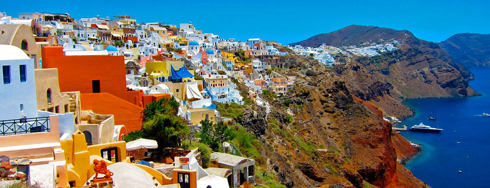
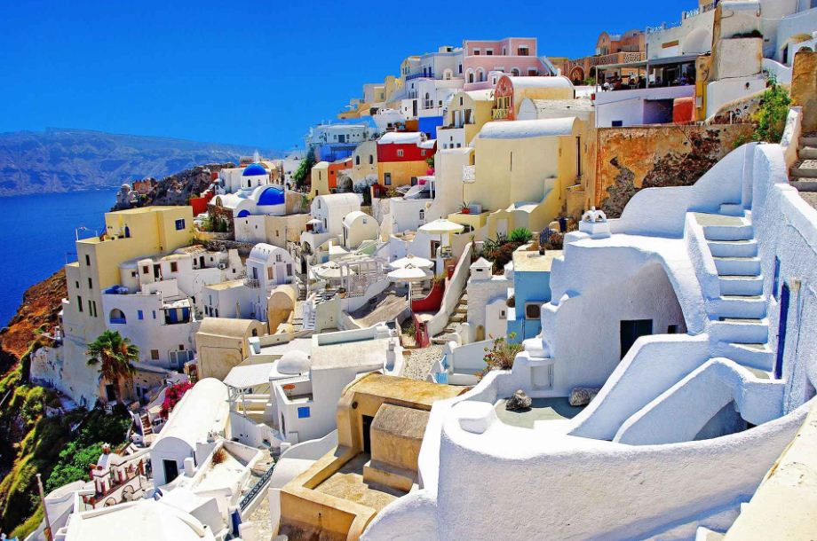
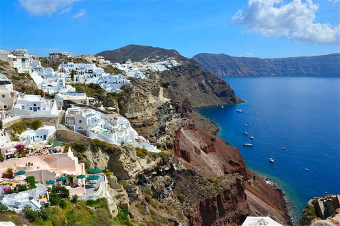

Santorini ili Tira je jedno ostrva u grupaciji Kiklada u Grčkoj. Upravno ostrvo pripada okrugu Santorini u okviru Periferiji Južni Egej. Santorini sa okolnim ostrvima čini jednu opštinu u okviru ovog okruga, ukupne površine 90,6 km². Ova opština uključije i tzv. Manja ostrva Santorinija - ostrvo Tirazija i nenaseljena ostrva: Nea Kameni, Palaja Kameni, Aspronizi i Kristijani. Santorini je jedno od najslikovitijih, najpoznatijih i turistički najposećenijih ostrva u Grčkoj. Ime ostrva je nastalo stastanjem latinski reči „Sveta Irena“ (lat. Saint Irene) u vreme mletačke vlasti nad ostrvom. Grčki naziv za ostrvo, Tira ili Fira, koristi se više među mesnim stanovništvo i u Grčkoj. Stariji nazivi za ostrvo Santorini su Stongili ("Kružan") i Kaliste ("najlepši"). Santorini se nalazi u južnom Egejskom moru i to je najjužnije ostrvo ostrvske grupe Kikladi. Ostrvo je udaljeno oko 75 kilometara jugoistočno od grčkog kopna i 63 kilometra severno od Krita. Najbliže ostrvo Kiklada je Ios, udaljen oko 20 km ka severu. Santorini je jedno od ostrva Kiklada srednje veličine. Ostrvo je veoma razuđeno i planinsko u većem delu. Oblik ostrva je posebno zanimljiv (oblik obrnutog „S"), pošto zapadna obala gradi zaliv, istočnu stanu vulkanskog grotla. Ovaj vulkan eksplodirao u izuzetno jakoj eksploziji 1600. p. n. e. i veruje se da je on bio glavni „krivac“ propasti Minojske civilizacije. Nekadašnje dno vulkana je danas zaliv u okviru ostrvlja Santorinija, koji je tokom istorije bilo stateški važan i uticao je na burnu istoriju ostrvlja. Santorini spada u ostrva Kiklada koja su položena najdalje od kopna, što povezano sa sušnom sredozemnom klimom prouzrokuje stalan nedostatak vode. Zbog toga je Santorini je sušan i kamenit, a biljni i životinjski svet su takođe osobeni za ovu klimu. Od gajenih kultura dominiraju maslina i vinova loza.
Istorija: Za Santorini, kao i za celokupne Kiklade, je neobično važno razdoblje kasne praistorije, tzv. Kikladska civilizacija, zavisna i bliska Kritskoj. Međutim, malo je materijalnih ostataka zbog prirodne katastrofe, koja se desila krajem ovog razdoblja. Naime, Santorini je ostatak vulkanskog ostrva na kome se zbila velika eksplozija negde u periodu 1650.1598 godine p. n. e. Serija zemljotresa je upozorila stanovništvo na kataklizmu koja se približava. O ovome se zna jer na ostrvu arheolozi nisu pronašli leševe iz tog vremena, niti vredne predmete. Erupcija vulkana je izazvala cunami visine 60 metara koji je uništio severnu obalu Krita, i veliki deo minojske flote. Na mestu nekadašnjeg ostrva stvorena je kaldera (ostatak vulkanskog grotla), a vulkanski pepeo je pokrio šire područje što je onemogućilo ljudski život za duže vreme. Veruje se da je erupcija Santorinija bila inspiracija Platonu za njegovu parabolu o Atlantidi. Veliki oblak vulkanske prašine se zatim premestio čak do Severne Amerike, gde su klimatske promene izazvale migracije stanovništva na jug. U doba stare Grčke Santorini je bio deo Deloske lige, a kasnije su ovde vladali ptolemejski vladari Egipta. Posle toga ostrvljem je vlada stari Rim, a zatim i Vizantija. 1204. g. posle osvajanja Carigrada od strane Krstaša Kikladi potpadaju pod vlast Mlečana, pod kojima ostaju vekovima, do kraja 16. veka (1579. g.). Novi gospodar Kikiladima bilo je osmansko carstvo, do početka 19. veka. Od 1204. do 1579, na Santoriniju su vladali Mlečani, koji su ostrvu dali ime. Krajem 16. veka ostrvo su zauzeli Turci. Posle osamostaljenja Grčke 1821., ostrvo je doživelo ekonomski procvat. Povremene vulkanske erupcije i zemljotresi se dešavaju i dan-danas. Poseldnjih decenija ostrvo se brzo razvija zahvaljujući međunarodnom turizmu.
 